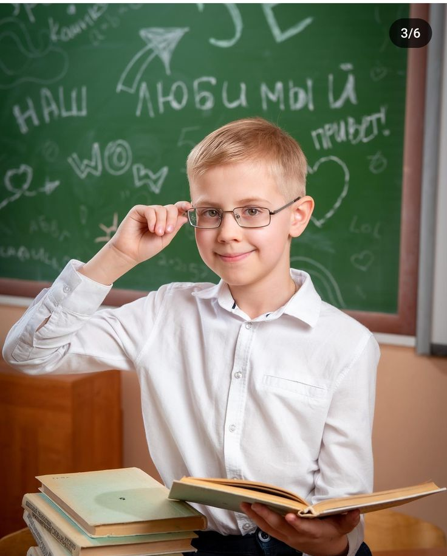

Ученики с ОВЗ (7-Б класс)
| ФИО ученика | Нозология | ИПРА (индивидуальная программа) | Успеваемость |
|---|---|---|---|
|
Петров Алексей  |
РАС |
• Адаптивные задания • Визуальные инструкции • Структурированное расписание |
Математика: 5 Русский язык: 4 средний балл: 4.5 |
Сидорова Мария
|
ДЦП |
• Увеличенный шрифт • Альтернативный ввод • Дополнительное время |
Математика: 5 Русский язык: 5 средний балл: 5.0 |